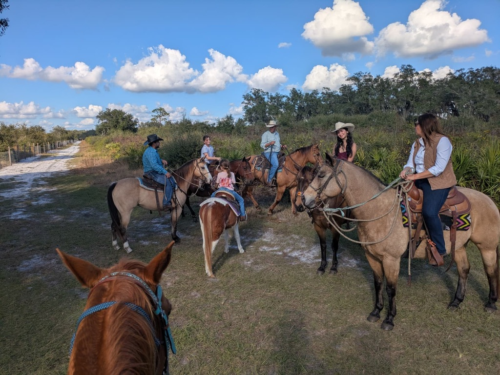

¿Quiénes somos?
Ac.aballo es una escuela ecuestre y un espacio de conexión emocional donde los caballos se convierten en maestros, espejos y guías del desarrollo humano.
Nuestro origen
Nacimos formalmente en Florida a finales de 2020 como un proyecto familiar con una visión clara: formar personas conscientes, seguras y conectadas a través del vínculo real entre el caballo y el ser humano.
Nuestra filosofía
- El binomio perfecto entre caballo y humano
- La sensibilidad como fortaleza
- El control emocional como base de la seguridad
- La conexión antes que la imposición
- El respeto al caballo como ser sensible
Misión
Acompañar a niños, jóvenes y adultos en su desarrollo físico, emocional y personal a través de experiencias conscientes con caballos, fomentando la confianza, la comunicación, la sensibilidad y el equilibrio entre mente, cuerpo y emoción.
Visión
Ser una escuela ecuestre y centro de conexión referente en Florida, reconocida por formar personas seguras, empáticas y conscientes, utilizando el vínculo caballo–humano como herramienta de transformación y crecimiento integral.